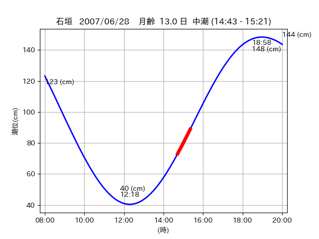
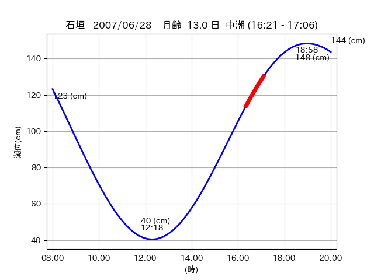

<!DOCTYPE html>
<html>
<head>
    
    <meta http-equiv="content-type" content="text/html; charset=UTF-8" />
    
        <script>
            L_NO_TOUCH = false;
            L_DISABLE_3D = false;
        </script>
    
    <style>html, body {width: 100%;height: 100%;margin: 0;padding: 0;}</style>
    <style>#map {position:absolute;top:0;bottom:0;right:0;left:0;}</style>
    <script src="https://cdn.jsdelivr.net/npm/leaflet@1.9.3/dist/leaflet.js"></script>
    <script src="https://code.jquery.com/jquery-3.7.1.min.js"></script>
    <script src="https://cdn.jsdelivr.net/npm/bootstrap@5.2.2/dist/js/bootstrap.bundle.min.js"></script>
    <script src="https://cdnjs.cloudflare.com/ajax/libs/Leaflet.awesome-markers/2.0.2/leaflet.awesome-markers.js"></script>
    <link rel="stylesheet" href="https://cdn.jsdelivr.net/npm/leaflet@1.9.3/dist/leaflet.css"/>
    <link rel="stylesheet" href="https://cdn.jsdelivr.net/npm/bootstrap@5.2.2/dist/css/bootstrap.min.css"/>
    <link rel="stylesheet" href="https://netdna.bootstrapcdn.com/bootstrap/3.0.0/css/bootstrap-glyphicons.css"/>
    <link rel="stylesheet" href="https://cdn.jsdelivr.net/npm/@fortawesome/fontawesome-free@6.2.0/css/all.min.css"/>
    <link rel="stylesheet" href="https://cdnjs.cloudflare.com/ajax/libs/Leaflet.awesome-markers/2.0.2/leaflet.awesome-markers.css"/>
    <link rel="stylesheet" href="https://cdn.jsdelivr.net/gh/python-visualization/folium/folium/templates/leaflet.awesome.rotate.min.css"/>
    
            <meta name="viewport" content="width=device-width,
                initial-scale=1.0, maximum-scale=1.0, user-scalable=no" />
            <style>
                #map_9789d866f876358fc57c5ddf632a8e10 {
                    position: relative;
                    width: 2048.0px;
                    height: 1600.0px;
                    left: 0.0%;
                    top: 0.0%;
                }
                .leaflet-container { font-size: 1rem; }
            </style>
        
</head>
<body>
    
    
            <div class="folium-map" id="map_9789d866f876358fc57c5ddf632a8e10" ></div>
        
</body>
<script>
    
    
            var map_9789d866f876358fc57c5ddf632a8e10 = L.map(
                "map_9789d866f876358fc57c5ddf632a8e10",
                {
                    center: [24.369, 123.961],
                    crs: L.CRS.EPSG3857,
                    ...{
  "zoom": 12,
  "zoomControl": true,
  "preferCanvas": false,
}

                }
            );

            

        
    
            var tile_layer_c9e4b82dc60d1e4c3681bf6eeadca442 = L.tileLayer(
                "https://cyberjapandata.gsi.go.jp/xyz/seamlessphoto/{z}/{x}/{y}.jpg",
                {
  "minZoom": 0,
  "maxZoom": 18,
  "maxNativeZoom": 18,
  "noWrap": false,
  "attribution": "\u5730\u7406\u9662\u5730\u56f3",
  "subdomains": "abc",
  "detectRetina": false,
  "tms": false,
  "opacity": 1,
}

            );
        
    
            tile_layer_c9e4b82dc60d1e4c3681bf6eeadca442.addTo(map_9789d866f876358fc57c5ddf632a8e10);
        
    
            var marker_f46278fbb76525676189635a7f4c6b91 = L.marker(
                [24.372, 123.9515],
                {
}
            ).addTo(map_9789d866f876358fc57c5ddf632a8e10);
        
    
            var icon_5a2b5e1e2299332fa1959188428d5f06 = L.AwesomeMarkers.icon(
                {
  "markerColor": "orange",
  "iconColor": "white",
  "icon": "info-sign",
  "prefix": "glyphicon",
  "extraClasses": "fa-rotate-0",
}
            );
        
    
        var popup_1b33687a0714b00b2c2af22a97750c80 = L.popup({
  "maxWidth": "100%",
});

        
            
                var html_5bdc196a52d049d94bc60e7f4c49b535 = $(`<div id="html_5bdc196a52d049d94bc60e7f4c49b535" style="width: 100.0%; height: 100.0%;"><table><tr><td></td></tr><tr><td><center>20070628 No.1 </center></table></td></tr></table</div>`)[0];
                popup_1b33687a0714b00b2c2af22a97750c80.setContent(html_5bdc196a52d049d94bc60e7f4c49b535);
            
        

        marker_f46278fbb76525676189635a7f4c6b91.bindPopup(popup_1b33687a0714b00b2c2af22a97750c80)
        ;

        
    
    
                marker_f46278fbb76525676189635a7f4c6b91.setIcon(icon_5a2b5e1e2299332fa1959188428d5f06);
            
    
            var poly_line_9af37118b810297af02a3a01055eb8d0 = L.polyline(
                [[24.372, 123.9515], [24.373, 123.9527]],
                {"bubblingMouseEvents": true, "color": "#FF00FF", "dashArray": null, "dashOffset": null, "fill": false, "fillColor": "#FF00FF", "fillOpacity": 0.2, "fillRule": "evenodd", "lineCap": "round", "lineJoin": "round", "noClip": false, "opacity": 1.0, "smoothFactor": 1.0, "stroke": true, "weight": 3}
            ).addTo(map_9789d866f876358fc57c5ddf632a8e10);
        
    
            var marker_fb761e6c9f054a7005254dbed3b3b406 = L.marker(
                [24.3683, 123.963],
                {
}
            ).addTo(map_9789d866f876358fc57c5ddf632a8e10);
        
    
            var icon_208018899f0ac653f338585d6772ce5a = L.AwesomeMarkers.icon(
                {
  "markerColor": "orange",
  "iconColor": "white",
  "icon": "info-sign",
  "prefix": "glyphicon",
  "extraClasses": "fa-rotate-0",
}
            );
        
    
        var popup_34c3b3119194323142ab7f184dfd714f = L.popup({
  "maxWidth": "100%",
});

        
            
                var html_d0d86ef94daebda67638273e94f60c3d = $(`<div id="html_d0d86ef94daebda67638273e94f60c3d" style="width: 100.0%; height: 100.0%;"><table><tr><td></td></tr><tr><td><center>20070628 No.2 </center></table></td></tr></table</div>`)[0];
                popup_34c3b3119194323142ab7f184dfd714f.setContent(html_d0d86ef94daebda67638273e94f60c3d);
            
        

        marker_fb761e6c9f054a7005254dbed3b3b406.bindPopup(popup_34c3b3119194323142ab7f184dfd714f)
        ;

        
    
    
                marker_fb761e6c9f054a7005254dbed3b3b406.setIcon(icon_208018899f0ac653f338585d6772ce5a);
            
    
            var poly_line_ccdc5550c3c8dee4a02bbe80f29eeb89 = L.polyline(
                [[24.3683, 123.963], [24.3701, 123.9584]],
                {"bubblingMouseEvents": true, "color": "#FF00FF", "dashArray": null, "dashOffset": null, "fill": false, "fillColor": "#FF00FF", "fillOpacity": 0.2, "fillRule": "evenodd", "lineCap": "round", "lineJoin": "round", "noClip": false, "opacity": 1.0, "smoothFactor": 1.0, "stroke": true, "weight": 3}
            ).addTo(map_9789d866f876358fc57c5ddf632a8e10);
        
</script>
</html>